Capítulo 5 Métodos lineares de regresión
NOTA: Para los siguientes capítulos nos basaremos en los libros (???) y (James et al. 2013).
5.1 Introducción
Supongamos que tenemos \(p\) variables de entrada que mezcladas con alguna relación desconocida y que provocan una respuesta \(Y\) de salida.
\[\begin{equation} Y = f(X_{1},\ldots,X_{p}) + \varepsilon \tag{5.1} \end{equation}\]
Aquí \(f\) es deconocida, las variables \(X\)’s son las variables de entrada y \(\varepsilon\) es el error cometido por hacer esta aproximación.
Hay dos motivos para estimar \(f\)
- Predicción: Si se estima \(f\) con \(\hat{f}\) entonces \[\begin{equation*} \hat{Y} = \hat{f}(X_{1},\ldots,X_{p}). \end{equation*}\]
Y si tuvieramos valores nuevos de los \(X\)’s entonces podríamos estimar el valor que el corresponde a \(Y\).
Aquí lo importante es que los resultados sean preciso:
- Error reducible: Error de \(\hat{f}\) alrededor de \(f\).
- Error irreducible: Error propio de las observaciones (muestreo).
\[\begin{align*} \mathbb{E}\left[\hat{Y}-Y\right] &= \mathbb{E}\left[\left( f(X_{1},\ldots,X_{p}) + \varepsilon - \hat{f}(X_{1},\ldots,X_{p}) \right)^{2} \right] \\ &= \underbrace{\left( f(X_{1},\ldots,X_{p})- \hat{f}(X_{1},\ldots,X_{p}) \right) ^{2} }_{\text{Reducible}} +\underbrace{\mathrm{Var}\left(\varepsilon\right)}_{\text{irreducible}}. \end{align*}\]
- Inferencia: Entender la relación entre \(X\) y \(Y\).
- ¿Cuál es la relación entre las variables predictoras y la respuesta?
- ¿Cuáles son más importantes?
- ¿El modelo es correcto?
5.2 Regresión lineal
El caso más sencillo es cuando esta relación es lineal y se describe de la siguiente forma
\[\begin{equation*} Y = \beta_{0} + \beta_{1}X_{1} + \cdots + \beta_{1}X_{1} + \varepsilon. \end{equation*}\]
Aquí los valores \(\beta\)’s son constantes a estimar, las variables \(X\)’s son las variables de entrada y \(\varepsilon\) es el error cometido por hacer esta aproximación.
Los \(X\)’s pueden ser
- Cuantitativos o Transformaciones.
- Cualitativos.
En el caso de ser cualititativos existe un truco para incluirlos dentro de la regresión
Ejemplo 5.1 Se tiene la variable \(G\) codificada con Casado (1), Soltero (2), Divorciado (3) y Unión Libre (4). Si queremos meter esta variable en una regresión debemos tomarla de la forma
\[\begin{equation*} X_{j} = \mathbf{1}_{\{G=j+1\}} \end{equation*}\]
que resulta en la matriz
\[\begin{equation*} \begin{matrix} X_{1} & X_{2} & X_{3}\\ 0 & 0 & 0 \\ 1 & 0 & 0 \\ 0 & 1 & 0 \\ 0 & 0 & 1 \\ \end{matrix} \end{equation*}\]
Existen otras formas de codificar este tipo de variables, pero esa es la más común.
5.2.1 Forma matricial
Podemos escribir la regresión de la forma
\[\begin{equation*} \boldsymbol{Y} = \boldsymbol{X}\boldsymbol{\beta} + \boldsymbol{\varepsilon} \end{equation*}\]
donde
\[\begin{multline*} \boldsymbol{Y} = \begin{pmatrix} Y_{1} \\ \vdots \\ Y_{n} \end{pmatrix}_{n\times 1} \quad \boldsymbol{Y} = \begin{pmatrix} 1 & X_{1,1} & \cdots & X_{p,1} \\ \vdots & \vdots & \cdots & \vdots\\ 1 & X_{1,n}& \cdots & X_{p,n} \end{pmatrix}_{n\times (p+1)} \\ \boldsymbol{\varepsilon} = \begin{pmatrix} \varepsilon_{1} \\ \vdots \\ \varepsilon_{n} \end{pmatrix}_{n\times 1} \quad \boldsymbol{\beta} = \begin{pmatrix} \beta_{0} \\ \beta_{1} \\ \vdots \\ \beta_{p} \end{pmatrix}_{(p+1)\times 1} \end{multline*}\]
Suponemos que \(\mathbb{E}\left[\varepsilon_{i}\right] = 0\) y \(\mathrm{Var}\left(\varepsilon_{i}\right) = \sigma^{2}\)
La forma de resolver este problema es por minimos cuadrados. Es decir, buscamos el \(\hat{\beta}\) que cumpla lo siguiente:
\[\begin{align} \hat{\beta} &= \operatorname{argmin}_\beta (\boldsymbol{Y} - \boldsymbol{X} \boldsymbol{\beta})^{\top} (\boldsymbol{Y} - \boldsymbol{X} \boldsymbol{\beta})\\ &= \operatorname{argmin}_\beta \sum_{i=1}^n \left( Y_{i} -\beta_{0} - \sum_{j=1}^p X_{j,i} \beta_{j} \right) \tag{5.2} \end{align}\]

Suponga que \(\gamma\) es un vector cualquiera en \(\mathbb{R}^{p+1}\) y tenemos a \(V = \{\boldsymbol{X}\boldsymbol{\gamma}, \gamma \in \mathbb{R}^{p+1}\}\).
\[\begin{align*} \boldsymbol{X}\boldsymbol{\beta} &= \operatorname{Proy}_{V} \boldsymbol{Y} \end{align*}\]
Entonces dado que \[\begin{equation*} \boldsymbol{Y}-\boldsymbol{X}\boldsymbol{\beta} \perp V \\ \boldsymbol{Y}-\boldsymbol{X}\boldsymbol{\beta} \perp \boldsymbol{X}\boldsymbol{\gamma}, \forall \boldsymbol{\gamma} \in \mathbb{R}^{p+1}. \end{equation*}\]
\[\begin{align*} <\boldsymbol{X}\boldsymbol{\gamma}, \boldsymbol{Y}-\boldsymbol{X}\boldsymbol{\beta} > &= 0 \\ \boldsymbol{\gamma}^{\top}\boldsymbol{X}^{\top}(\boldsymbol{Y}-\boldsymbol{X}\boldsymbol{\beta}) &= 0 \\ \boldsymbol{\gamma}^{\top}\boldsymbol{X}^{\top}\boldsymbol{Y} &= \boldsymbol{\gamma}^{\top} \boldsymbol{X}^{\top} \boldsymbol{X}\boldsymbol{\beta} \\ \boldsymbol{X}^{\top}\boldsymbol{Y} &= \boldsymbol{X}^{\top} \boldsymbol{X}\boldsymbol{\beta} \\ \boldsymbol{\beta} &= (\boldsymbol{X}^{\top} \boldsymbol{X})^{-1} \boldsymbol{X}^{\top}\boldsymbol{Y} \end{align*}\]
Donde \(\boldsymbol{X}^{\top} \boldsymbol{X}\) debe ser invertible. Si no es así, se puede construir su inversa generalizada pero no garantiza la unicidad de los \(\beta\)’s. Es decir, puede existir \(\hat{\beta} \neq \tilde{\beta}\) tal que \(\boldsymbol{X}\boldsymbol{\hat{\beta}} = \boldsymbol{X}\boldsymbol{\tilde{\beta}}\)
En el caso de predicción tenemos que
\[\begin{align*} \hat{Y} &= X\beta \\ &= \boldsymbol{X}(\boldsymbol{X}^{\top} \boldsymbol{X})^{-1} \boldsymbol{X}^{\top}\boldsymbol{Y} \\ &= H \boldsymbol{Y} \end{align*}\]
Donde \(H\) es la matriz “techo” o “hat”. Es la proyección de Y al espacio de las columnas de \(X\).
Ejercicio 5.1 Suponga que tenemos la regresión simple
\[\begin{equation*} Y = \beta_{0} + \beta_{1}X_{1}+\varepsilon. \end{equation*}\]
Muestre que \(\beta_{0}\) y \(\beta_{1}\) son
Para el caso de la regresión simple tenemos que
\[\begin{align*} \hat{\beta}_{1}&= \frac{\sum_{i=1}^{n}\left(X_{i}-\overline{X}\right)\left(Y_{i}-\overline{Y}\right)}{\sum_{i=1}^{n}\left(X_{i}-\overline{x}\right)^{2}} \\ \hat{\beta}_{0}&= \bar{Y}-\widehat{\beta}_{1} \bar{X} \end{align*}\]
usando los siguiente métodos:
- El método de proyecciones.
- Minimizando el criterio de mínimos cuadrados. Ecuación (5.2).
5.2.2 Laboratorio
Usemos la base mtcars para los siguientes ejemplos. Toda la información de esta base se encuentra en ?mtcars.
mtcars <- within(mtcars, {
vs <- factor(vs, labels = c("V-Shape", "Straight-Line"))
am <- factor(am, labels = c("automatic", "manual"))
cyl <- factor(cyl)
gear <- factor(gear)
carb <- factor(carb)
})
head(mtcars)## mpg cyl disp hp drat wt qsec vs am
## Mazda RX4 21.0 6 160 110 3.90 2.620 16.46 V-Shape manual
## Mazda RX4 Wag 21.0 6 160 110 3.90 2.875 17.02 V-Shape manual
## Datsun 710 22.8 4 108 93 3.85 2.320 18.61 Straight-Line manual
## Hornet 4 Drive 21.4 6 258 110 3.08 3.215 19.44 Straight-Line automatic
## Hornet Sportabout 18.7 8 360 175 3.15 3.440 17.02 V-Shape automatic
## Valiant 18.1 6 225 105 2.76 3.460 20.22 Straight-Line automatic
## gear carb
## Mazda RX4 4 4
## Mazda RX4 Wag 4 4
## Datsun 710 4 1
## Hornet 4 Drive 3 1
## Hornet Sportabout 3 2
## Valiant 3 1## mpg cyl disp hp drat
## Min. :10.40 4:11 Min. : 71.1 Min. : 52.0 Min. :2.760
## 1st Qu.:15.43 6: 7 1st Qu.:120.8 1st Qu.: 96.5 1st Qu.:3.080
## Median :19.20 8:14 Median :196.3 Median :123.0 Median :3.695
## Mean :20.09 Mean :230.7 Mean :146.7 Mean :3.597
## 3rd Qu.:22.80 3rd Qu.:326.0 3rd Qu.:180.0 3rd Qu.:3.920
## Max. :33.90 Max. :472.0 Max. :335.0 Max. :4.930
## wt qsec vs am gear
## Min. :1.513 Min. :14.50 V-Shape :18 automatic:19 3:15
## 1st Qu.:2.581 1st Qu.:16.89 Straight-Line:14 manual :13 4:12
## Median :3.325 Median :17.71 5: 5
## Mean :3.217 Mean :17.85
## 3rd Qu.:3.610 3rd Qu.:18.90
## Max. :5.424 Max. :22.90
## carb
## 1: 7
## 2:10
## 3: 3
## 4:10
## 6: 1
## 8: 1Observemos las relaciones generales de las variables de esta base de datos
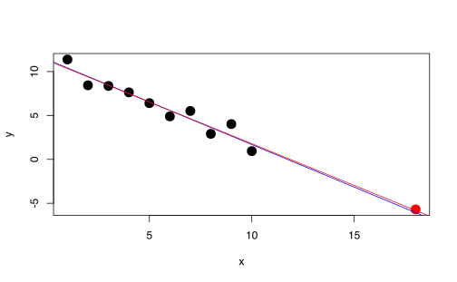
El objetivo es tratar la eficiencia del automovil mpg con respecto a su peso wt.
Usaremos una regresión lineal para encontrar los coeficientes.
Primero hay que construir la matriz de diseño
## [1] 2.620 2.875 2.320 3.215 3.440 3.460## [1] 21.0 21.0 22.8 21.4 18.7 18.1## [,1]
## [1,] 5.291624ggplot(data = data.frame(x = X, y = Y)) + geom_point(aes(x,
y)) + geom_line(data = dfreg, aes(x, yreg), color = "red") +
theme_minimal()
## [,1] [,2]
## [1,] 1 2.620
## [2,] 1 2.875
## [3,] 1 2.320
## [4,] 1 3.215
## [5,] 1 3.440
## [6,] 1 3.460## [1] 21.0 21.0 22.8 21.4 18.7 18.1## [,1]
## [1,] 37.285126
## [2,] -5.344472ggplot(data = data.frame(x0 = X[, 1], x1 = X[, 2],
y = Y)) + geom_point(aes(x1, y)) + geom_line(data = dfreg,
aes(x.2, yreg), color = "red") + theme_minimal()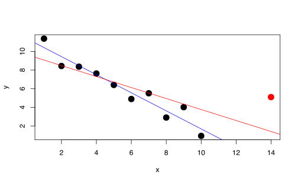
Ojo obviamente esto se puede hacer más fácil con los siguientes comandos
##
## Call:
## lm(formula = mpg ~ -1 + wt, data = mtcars)
##
## Coefficients:
## wt
## 5.292##
## Call:
## lm(formula = mpg ~ wt, data = mtcars)
##
## Coefficients:
## (Intercept) wt
## 37.285 -5.344Suponga que queremos incluir una variable categorica como cyl (Número de cilindros). Lo que se debe hacer es convertir esta variable a dummy.
## (Intercept) cyl6 cyl8
## Mazda RX4 1 1 0
## Mazda RX4 Wag 1 1 0
## Datsun 710 1 0 0
## Hornet 4 Drive 1 1 0
## Hornet Sportabout 1 0 1
## Valiant 1 1 0## [,1]
## (Intercept) 26.663636
## cyl6 -6.920779
## cyl8 -11.563636##
## Call:
## lm(formula = mpg ~ cyl, data = mtcars)
##
## Coefficients:
## (Intercept) cyl6 cyl8
## 26.664 -6.921 -11.564## (Intercept) cyl6 cyl8
## 26.663636 -6.920779 -11.563636## (Intercept)
## 26.66364## (Intercept)
## 19.74286## (Intercept)
## 15.15.3 Propiedades estadísticas
Uno de los supuestos fundamentales de regresión lineal es que
\[\begin{equation*} \varepsilon\sim \mathcal{N}\left(0,\sigma^{2}I\right) \end{equation*}\] .
En ese caso
\[\begin{equation*} Y = X\beta + \varepsilon \sim \mathcal{N}\left(X\beta,\sigma^{2}I\right) \end{equation*}\]
Y además
\[\begin{align*} \hat{\beta} &= (X^{\top}X)^{-1}X^{\top}Y \\ &\sim \mathcal{N}\left((X^{\top}X)^{-1}X^{\top}X\beta,((X^{\top}X)^{-1}X^{\top})\sigma I ((X^{\top}X)^{-1}X^{\top})^{\top}\right) \\ &\sim \mathcal{N}\left(\beta,\sigma (X^{\top}X)^{-1}\right) \\ \end{align*}\]
Es decir, que
\[\begin{align*} \mathbb{E}\left[\hat{\beta}\right] &= \beta \\ \operatorname{Var}(\hat{\beta}) &= \sigma^{2}\left(X^{\top} X\right)^{-1} \end{align*}\]
La estimación de \(\sigma^{2}\)
\[\begin{align*} \hat{\sigma}^{2} &= \frac{1}{n-p-1} \sum_{i=1}^{n} \left( Y_{i} - \hat{Y}_{i}\right)^{2} \\ &= \frac{1}{n-p-1}\left\Vert Y - X\hat{\beta} \right\Vert^{2} \\ &= \frac{1}{n-p-1} \left\Vert Y-\operatorname{Proy}_{V}Y \right\Vert^{2} \end{align*}\]
Otra forma de verlo es \[\begin{align*} Y-\operatorname{Proy}_{V}Y &= X\beta + \varepsilon - \operatorname{Proy}_{V}( X\beta + \varepsilon) \\ &= X\beta - \operatorname{Proy}_{V}( \underbrace{X\beta}_{\in V}) + \varepsilon - \underbrace{\operatorname{Proy}_{V}( \varepsilon)}_{=0} \\ &= X\beta -X\beta + \varepsilon \\ &= \operatorname{Proy}_{V^{\top}}( \varepsilon) \end{align*}\]
\[\begin{equation*} \hat{\sigma}^{2} = \frac{1}{dim(V^{\top})}\left\Vert \operatorname{Proy}_{V^{\top}}\varepsilon\right\Vert \\ \end{equation*}\]
Cumple con la propiedad que \(\mathbb{E}\left[\hat{\sigma}^{}\right] = \sigma^{2}\).
Y además \((n-p-1)\hat{\sigma}^{2} \sim \sigma^{2} \chi^{2}_{n-p-1}.\)
5.3.1 Prueba \(t\)
Dado que los coeficientes \(\beta\) son normales, se puede hacer la prueba de hipotesis
\[\begin{equation*} H_{0}: \beta_{j} = 0 \quad \text{ vs } \quad H_{1}:\beta_{j}\neq 0. \end{equation*}\]
El estadístico es
\[\begin{equation*} z_{j} = \frac{\hat{\beta}_{j}}{\hat{\sigma} \sqrt{v_{j}}} \end{equation*}\]
donde \(v_{j}\) es el \(j\)-esimo elemento de la diagonal de \((X^{\top}X)^{-1}\).
Bajo \(H_{0}\) \(z_{j} \sim t_{n-p-1}\) y se rechaza \(H_{0}\) si
\[\begin{equation*} \left\vert z_{j} \right\vert > t_{n-p-1, 1-\frac{\alpha}{2}} \end{equation*}\]
5.3.2 Prueba \(F\)
\[\begin{equation*} H_{0}: \beta_{1} = \cdots =\beta_{p} = 0 \quad \text{ vs }\quad H_{1}: \text{ al menos un \(\beta\) no es cero}. \end{equation*}\]
En este caso queremos comparar el modelo nulo \(Y=\beta_{0}+\varepsilon\) contra el modelo completo \(Y=\beta_{0}+ \beta_{1}X_{1} + \cdots + \beta_{p}X_{p} + \varepsilon\).
Defina
\[\begin{align*} TSS &= \sum_{i=1}^{n} \left( Y_{i} -\overline{Y} \right)^{2} \\ RSS &= \sum_{i=1}^{n} \left( Y_{i} -\overline{Y} \right)^{2} \\ \end{align*}\]
TSS = Total sum of squares
RSS = Residual sum of squares
Entonces
\[\begin{equation*} F = \frac{\frac{TSS-RSS}{p}}{\frac{RSS}{n-p-1}} \sim \frac{\chi^{2}_{p}}{\chi^{2}_{n-p-1}}. \end{equation*}\]
Rechazamos \(H_{0}\) si
\[\begin{equation*} F > F_{p, n-p-1, 1-\alpha}. \end{equation*}\]
5.3.3 Laboratorio
Siguiendo con nuestro ejemplo, vamos a explorar un poco más la función lm.
##
## Call:
## lm(formula = mpg ~ wt, data = mtcars)
##
## Residuals:
## Min 1Q Median 3Q Max
## -4.5432 -2.3647 -0.1252 1.4096 6.8727
##
## Coefficients:
## Estimate Std. Error t value Pr(>|t|)
## (Intercept) 37.2851 1.8776 19.858 < 2e-16 ***
## wt -5.3445 0.5591 -9.559 1.29e-10 ***
## ---
## Signif. codes: 0 '***' 0.001 '**' 0.01 '*' 0.05 '.' 0.1 ' ' 1
##
## Residual standard error: 3.046 on 30 degrees of freedom
## Multiple R-squared: 0.7528, Adjusted R-squared: 0.7446
## F-statistic: 91.38 on 1 and 30 DF, p-value: 1.294e-10##
## Call:
## lm(formula = mpg ~ wt + cyl, data = mtcars)
##
## Residuals:
## Min 1Q Median 3Q Max
## -4.5890 -1.2357 -0.5159 1.3845 5.7915
##
## Coefficients:
## Estimate Std. Error t value Pr(>|t|)
## (Intercept) 33.9908 1.8878 18.006 < 2e-16 ***
## wt -3.2056 0.7539 -4.252 0.000213 ***
## cyl6 -4.2556 1.3861 -3.070 0.004718 **
## cyl8 -6.0709 1.6523 -3.674 0.000999 ***
## ---
## Signif. codes: 0 '***' 0.001 '**' 0.01 '*' 0.05 '.' 0.1 ' ' 1
##
## Residual standard error: 2.557 on 28 degrees of freedom
## Multiple R-squared: 0.8374, Adjusted R-squared: 0.82
## F-statistic: 48.08 on 3 and 28 DF, p-value: 3.594e-11##
## Call:
## lm(formula = mpg ~ ., data = mtcars)
##
## Residuals:
## Min 1Q Median 3Q Max
## -3.5087 -1.3584 -0.0948 0.7745 4.6251
##
## Coefficients:
## Estimate Std. Error t value Pr(>|t|)
## (Intercept) 23.87913 20.06582 1.190 0.2525
## cyl6 -2.64870 3.04089 -0.871 0.3975
## cyl8 -0.33616 7.15954 -0.047 0.9632
## disp 0.03555 0.03190 1.114 0.2827
## hp -0.07051 0.03943 -1.788 0.0939 .
## drat 1.18283 2.48348 0.476 0.6407
## wt -4.52978 2.53875 -1.784 0.0946 .
## qsec 0.36784 0.93540 0.393 0.6997
## vsStraight-Line 1.93085 2.87126 0.672 0.5115
## ammanual 1.21212 3.21355 0.377 0.7113
## gear4 1.11435 3.79952 0.293 0.7733
## gear5 2.52840 3.73636 0.677 0.5089
## carb2 -0.97935 2.31797 -0.423 0.6787
## carb3 2.99964 4.29355 0.699 0.4955
## carb4 1.09142 4.44962 0.245 0.8096
## carb6 4.47757 6.38406 0.701 0.4938
## carb8 7.25041 8.36057 0.867 0.3995
## ---
## Signif. codes: 0 '***' 0.001 '**' 0.01 '*' 0.05 '.' 0.1 ' ' 1
##
## Residual standard error: 2.833 on 15 degrees of freedom
## Multiple R-squared: 0.8931, Adjusted R-squared: 0.779
## F-statistic: 7.83 on 16 and 15 DF, p-value: 0.0001245.4 Medida de bondad de ajuste
La prueba \(F\) nos dice si un modelo es nulo o no, pero no nos dice si tengo dos modelos cuál es mejor que otro.
Hay varias medidas para comparar modelos (la veremos con más detalle en otro capítulo):
- Error estándar residual (\(\sigma\))
- \(R^{2}\) y \(R^{2}\) ajustado
- \(C_{p}\) de Mallows
- Akaike Information Criterion (AIC)
- Bayesian Information Criterion (BIC)
Los índices \(C_{p}\) de Mallows, AIC y BIC los veremos después.
- Error estándar residual
- Se define como
\[\begin{align*} \mathrm{RSE} &= \sqrt{\hat{\sigma^{2}}}\\ &= \sqrt{\frac{1}{n-p-1} \sum_{i=1}^{n} \left( Y_{i} - \hat{Y}_{i}\right)^{2}} \\ &= \sqrt{\frac{\mathrm{RSS}}{n-p-1}} \end{align*}\]
Entre más pequeño mejor, pero depende de las unidades de \(Y\).
- Estadístico \(R^{2}\)
- \[\begin{equation*} R^{2} = \frac{\mathrm{TSS}-\mathrm{RSS}}{\mathrm{TSS}} = 1-\frac{\mathrm{RSS}}{\mathrm{TSS}} \end{equation*}\]
- RSS: Varianza sin explicar por el modelo completo.
- TSS: Varianza sin explicar por el modelo nulo.
- Estadístico \(R^{2}\) ajustado
- \[\begin{equation*} R^{2}_{adj} = 1-\frac{\frac{\mathrm{RSS}}{n-p-1}}{\frac{\mathrm{TSS}}{n-1}} \end{equation*}\]
5.4.1 Laboratorio
# Número de datos
n <- 1000
# Número de variables
p <- 2
x1 <- rnorm(1000)
x2 <- runif(1000)
y <- 1 + x1 + x2 + rnorm(1000, sd = 0.5)
fit <- lm(y ~ x1 + x2)5.4.1.1 \(R^2\)
## [1] 1368.262## [1] 243.3406## [1] 0.8221535Otra forma de entender el \(R^2\) es notando que
## [1] 0.82215355.4.1.2 \(R^2\) ajustado
## [1] 1.369632## [1] 0.2440728## [1] 0.82179685.4.1.3 summary
##
## Call:
## lm(formula = y ~ x1 + x2)
##
## Residuals:
## Min 1Q Median 3Q Max
## -1.38036 -0.33095 -0.02321 0.33647 1.51969
##
## Coefficients:
## Estimate Std. Error t value Pr(>|t|)
## (Intercept) 1.01523 0.03097 32.78 <2e-16 ***
## x1 1.02320 0.01581 64.72 <2e-16 ***
## x2 0.97446 0.05327 18.29 <2e-16 ***
## ---
## Signif. codes: 0 '***' 0.001 '**' 0.01 '*' 0.05 '.' 0.1 ' ' 1
##
## Residual standard error: 0.494 on 997 degrees of freedom
## Multiple R-squared: 0.8222, Adjusted R-squared: 0.8218
## F-statistic: 2304 on 2 and 997 DF, p-value: < 2.2e-165.5 Predicción
Hay dos tipos de errores que se deben considerar en regresones lineales:
- Error Reducible: Recuerde que \(\hat{Y} = \hat{X}\hat{\beta}\) es el estimador de la función \(f(X)=X\beta = \beta_{0} + \beta_{1}X_{1}+\cdots+\beta_{p}X_{p}\).
Por lo tanto su error (reducible) es:
\[\begin{equation*} \left( f(X) - \hat{Y}\right) ^{2}. \end{equation*}\]
Para un conjunto de datos \(X_{0}\), tenemos que
\[\begin{align*} & \hat{\beta} \sim \mathcal{N}\left(\beta, \sigma^{2}\left( (X_{0}^{\top}X_{0})^{-1} \right)\right) \\ \implies & \hat{Y} = \hat{X_{0}}\hat{\beta} \sim \mathcal{N}\left(\hat{X_{0}}\beta , \sigma^{2}X_{0}^{\top}((X_{0}^{\top}X_{0})^{-1}X_{0} \right) \end{align*}\]
Por lo tanto un intervalo de confianza al \(1-\alpha\) para \(X\beta\) es
\[\begin{equation*} X_{0}\beta \pm z_{1-\frac{\alpha}{2}} \hat{\sigma} \sqrt{X_{0}^{\top}(X_{0}^{\top}X_{0})^{-1}X_{0}}. \end{equation*}\]
- Error irreducible: Aún conociendo perfectamente los \(\beta\)’s, existe el error desconocido \(\varepsilon\sim \mathcal{N}\left(0,\sigma^{2}\right)\) del modelo
\[\begin{equation*} Y = X\beta + \varepsilon. \end{equation*}\]
Entonces la varianza total de la predicción sería
\[\begin{equation*} \sigma^{2} + \sigma^{2}X_{0}^{\top}( (X_{0}^{\top}X_{0})^{-1}X_{0} \end{equation*}\]
Entonces un intervalo de predicción al \(1-\alpha\) debe tomar en cuenta ese error y por lo tanto
\[\begin{equation*} X_{0}\beta \pm z_{1-\frac{\alpha}{2}} \hat{\sigma} \sqrt{1+X_{0}^{\top}(X_{0}^{\top}X_{0})^{-1}X_{0}}. \end{equation*}\]
Resumiendo
- Intervalo de confianza: es la incertidumbre que existe alrededor de la línea de regresión.
- Intervalo de predicción: es la incertidumbre que existe alrededor del proceso general que generararon los datos bajo el supuesto de linealidad.
5.5.1 Laboratorio
## [1] 1.513 5.424## wt
## 1 2.5
## 2 3.0
## 3 3.5## fit lwr upr
## 1 23.92395 22.55284 25.29506
## 2 21.25171 20.12444 22.37899
## 3 18.57948 17.43342 19.72553## fit lwr upr
## 1 23.92395 17.55411 30.29378
## 2 21.25171 14.92987 27.57355
## 3 18.57948 12.25426 24.904695.5.1.1 Ajuste de la regresión sin intervalos de confianza
p <- ggplot(mtcars, aes(x = wt, y = mpg))
p <- p + geom_point(size = 2) # Use circulos de tamaño 2
p <- p + geom_smooth(method = lm, # Agregar la línea de regresión
se = FALSE, # NO incluir el intervalo de confianza
size = 1,
col = "red") # Línea de color rojo
p <- p + theme_bw() # Tema de fondo blanco
p <- p + theme(axis.text = element_text(size = 20), # Aumentar el tamaño
axis.title = element_text(size = 20)) # de letra en los ejes
# Dibujar el gráfico
p 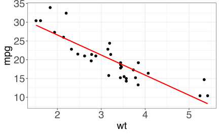
5.5.1.2 Ajuste de la regresión con intervalos de confianza
p <- ggplot(mtcars, aes(x = wt, y = mpg))
p <- p + geom_point(size = 2) # Use circulos de tamaño 2
p <- p + geom_smooth(method = lm, # Agregar la línea de regresión
se = TRUE, # Incluir el intervalo de confianza
size = 1,
col = "red") # Línea de color rojo
p <- p + theme_bw() # Tema de fondo blanco
p <- p + theme(axis.text = element_text(size = 20), # Aumentar el tamaño
axis.title = element_text(size = 20)) # de letra en los ejes
# Dibujar el gráfico
p 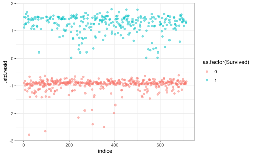
5.5.1.3 Ajuste de la regresión con intervalos de confianza y predicción
# Agregamos a mtcars el intervalo de predicción
# para cada dato
mtcars.pred <- data.frame(mtcars, predict(lm.r, interval = "prediction"))
p <- ggplot(mtcars.pred, aes(x = wt, y = mpg))
# Use circulos de tamaño 2
p <- p + geom_point(size = 2)
# Agregue una banda de tamaño [lwr, upr] para cada
# punto y llamela 'predicción'
p <- p + geom_ribbon(aes(ymin = lwr, ymax = upr, fill = "predicción"),
alpha = 0.3)
# Agregue el intervalo de confianza usual y llame a
# ese intervalo 'confianza'
p <- p + geom_smooth(method = lm, aes(fill = "confianza"),
size = 1, col = "red")
# Para agregar bien las leyendas
p <- p + scale_fill_manual("Intervalos", values = c("green",
"yellow"))
p <- p + theme_bw()
p <- p + theme(axis.text = element_text(size = 20),
axis.title = element_text(size = 20))
# Dibujar el gráfico
pRepitamos el mismo ejercicio anterior pero con un caso más sencillo.
n <- 1000
X <- runif(n, 0, 10)
Y <- 10 + sin(5 * X) + X + rnorm(1000, 0, 1)
toyex.initial <- data.frame(X, Y) %>% arrange(X)
plot(toyex.initial)##
## Call:
## lm(formula = Y ~ X, data = toyex.initial)
##
## Residuals:
## Min 1Q Median 3Q Max
## -3.8025 -0.8009 0.0220 0.8762 3.2015
##
## Coefficients:
## Estimate Std. Error t value Pr(>|t|)
## (Intercept) 10.12092 0.07365 137.41 <2e-16 ***
## X 0.97210 0.01279 75.99 <2e-16 ***
## ---
## Signif. codes: 0 '***' 0.001 '**' 0.01 '*' 0.05 '.' 0.1 ' ' 1
##
## Residual standard error: 1.202 on 998 degrees of freedom
## Multiple R-squared: 0.8526, Adjusted R-squared: 0.8525
## F-statistic: 5775 on 1 and 998 DF, p-value: < 2.2e-16Ahora, quisiera generar muchas muestras del mismo experimento
toyex.pred <- NULL
for (i in 1:10) {
X <- runif(n, 0, 10)
Y <- 10 + sin(5 * X) + X + rnorm(1000, 0, 1)
toyexi <- data.frame(im = i, X, Y)
toyexi <- toyexi %>% arrange(X)
toyex.pred <- bind_rows(toyex.pred, data.frame(toyexi,
predict(lm.toyex.initial, interval = "prediction")))
}
for (i in 1:10) {
toyex.pred$fit <- fitted(lm(formula = Y ~ X, data = toyex.pred[toyex.pred$im ==
i, ]))
}
toyex.pred$im <- as.factor(toyex.pred$im)library(gganimate)
ggplot(data = toyex.pred, aes(x = X, y = Y)) + geom_point(size = 1) +
geom_smooth(data = toyex.initial, method = lm,
mapping = aes(fill = "confianza"), size = 1,
col = "red") + geom_ribbon(data = toyex.pred.initial,
mapping = aes(x = X, ymin = lwr, ymax = upr, fill = "predicción",
), alpha = 0.3) + labs(title = paste0("Muestra #: {closest_state}")) +
scale_fill_manual("Intervalos", values = c("green",
"yellow")) + theme_bw() + theme(axis.text = element_text(size = 20),
axis.title = element_text(size = 20)) + transition_states(im)5.6 Interacciones
En el modelo clásico
\[\begin{equation*} Y = \beta_{0} + \beta_{1} X_{1} + \beta_{2} X_{2} + \varepsilon \end{equation*}\]
Aumentemos en 1 unidad \(X_{1}\) y rescribamos el modelo original
\[\begin{align*} Y &= \beta_{0} + \beta_{1} (X_{1}+1) + \beta_{2} X_{2} + \varepsilon \\ Y &= (\beta_{0} + \beta_{1}) + \beta_{1} X_{1} + \beta_{2} X_{2} + \varepsilon \\ Y &= \tilde{\beta_{0}} + \beta_{1} X_{1} + \beta_{2} X_{2} + \varepsilon \\ \end{align*}\]
Es decir, el modelo original sigue siendo el mismo aunque hayamos cambiado el \(X_1\). Este fenómeno ocurre siempre bajo transformaciones lineales de las variables.
Ahora suponga que tenemos el siguiente modelo y aumentamos en 1 el \(X_1\)
\[\begin{align*} Y &= \beta_{0} + \tilde{\beta_{1}} X_{1} X_{2} +\varepsilon \\ \implies Y &= \beta_{0} + \beta_{1} (X_{1}+1) X_{2} +\varepsilon \\ \implies Y &= \beta_{0} + \beta_{1}X_{2} + \beta_{1} X_{1} X_{2} +\varepsilon \\ \end{align*}\]
OJO. Terminamos con un modelo diferente con el que empezamos. Esto es indeseable ya que no hay consistencia en la modelación,
Una forma de arreglar el problema es incluir las interacciones junto con todos sus efectos directos.
\[\begin{equation*} Y = \beta_{0} + \beta_{1}X_{1} + \beta_{2} X_{2} + \beta_{3} X_{1} X_{2} +\varepsilon \\ \end{equation*}\]
Esto se le conoce como principio de jerarquía. No es importante si los efectos directos son relevante o no dentro del modelo, siempre se deben de incluir para manter la consistencia.
5.6.1 Laboratorio
Generamos una base de datos nueva con solamente wt centrado
# La función across y where solo funciona solo para
# dplyr 1.0 Si tienen otra versión, pueden usar
# mutate_if
mtcars_centered <- mtcars %>% mutate(across("wt", scale,
scale = FALSE, center = TRUE))
# Si no se tiene dplyr 1.0
mtcars_centered <- mtcars %>% mutate_at("wt", scale,
scale = FALSE, center = TRUE)Compare lo que ocurre con los coeficientes de la base original y la nueva base.
##
## Call:
## lm(formula = mpg ~ wt + disp, data = mtcars)
##
## Residuals:
## Min 1Q Median 3Q Max
## -3.4087 -2.3243 -0.7683 1.7721 6.3484
##
## Coefficients:
## Estimate Std. Error t value Pr(>|t|)
## (Intercept) 34.96055 2.16454 16.151 4.91e-16 ***
## wt -3.35082 1.16413 -2.878 0.00743 **
## disp -0.01773 0.00919 -1.929 0.06362 .
## ---
## Signif. codes: 0 '***' 0.001 '**' 0.01 '*' 0.05 '.' 0.1 ' ' 1
##
## Residual standard error: 2.917 on 29 degrees of freedom
## Multiple R-squared: 0.7809, Adjusted R-squared: 0.7658
## F-statistic: 51.69 on 2 and 29 DF, p-value: 2.744e-10##
## Call:
## lm(formula = mpg ~ wt + disp, data = mtcars_centered)
##
## Residuals:
## Min 1Q Median 3Q Max
## -3.4087 -2.3243 -0.7683 1.7721 6.3484
##
## Coefficients:
## Estimate Std. Error t value Pr(>|t|)
## (Intercept) 24.18011 2.18221 11.081 6.12e-12 ***
## wt -3.35082 1.16413 -2.878 0.00743 **
## disp -0.01773 0.00919 -1.929 0.06362 .
## ---
## Signif. codes: 0 '***' 0.001 '**' 0.01 '*' 0.05 '.' 0.1 ' ' 1
##
## Residual standard error: 2.917 on 29 degrees of freedom
## Multiple R-squared: 0.7809, Adjusted R-squared: 0.7658
## F-statistic: 51.69 on 2 and 29 DF, p-value: 2.744e-10Supongamos que formamos un modelo con solo la interacción y no incluimos los efectos directos.
##
## Call:
## lm(formula = mpg ~ wt * disp - wt - disp, data = mtcars)
##
## Residuals:
## Min 1Q Median 3Q Max
## -4.259 -2.603 -1.657 2.165 8.589
##
## Coefficients:
## Estimate Std. Error t value Pr(>|t|)
## (Intercept) 26.2621926 1.0418029 25.208 < 2e-16 ***
## wt:disp -0.0072897 0.0009721 -7.499 2.33e-08 ***
## ---
## Signif. codes: 0 '***' 0.001 '**' 0.01 '*' 0.05 '.' 0.1 ' ' 1
##
## Residual standard error: 3.614 on 30 degrees of freedom
## Multiple R-squared: 0.6521, Adjusted R-squared: 0.6405
## F-statistic: 56.24 on 1 and 30 DF, p-value: 2.329e-08##
## Call:
## lm(formula = mpg ~ wt * disp - wt - disp, data = mtcars_centered)
##
## Residuals:
## Min 1Q Median 3Q Max
## -5.878 -2.775 -1.162 2.409 11.150
##
## Coefficients:
## Estimate Std. Error t value Pr(>|t|)
## (Intercept) 21.460008 0.859706 24.962 < 2e-16 ***
## wt:disp -0.013127 0.002714 -4.837 3.69e-05 ***
## ---
## Signif. codes: 0 '***' 0.001 '**' 0.01 '*' 0.05 '.' 0.1 ' ' 1
##
## Residual standard error: 4.592 on 30 degrees of freedom
## Multiple R-squared: 0.4382, Adjusted R-squared: 0.4195
## F-statistic: 23.4 on 1 and 30 DF, p-value: 3.686e-05El modelo correcto sería el siguiente:
##
## Call:
## lm(formula = mpg ~ wt + disp + wt * disp, data = mtcars)
##
## Residuals:
## Min 1Q Median 3Q Max
## -3.267 -1.677 -0.836 1.351 5.017
##
## Coefficients:
## Estimate Std. Error t value Pr(>|t|)
## (Intercept) 44.081998 3.123063 14.115 2.96e-14 ***
## wt -6.495680 1.313383 -4.946 3.22e-05 ***
## disp -0.056358 0.013239 -4.257 0.00021 ***
## wt:disp 0.011705 0.003255 3.596 0.00123 **
## ---
## Signif. codes: 0 '***' 0.001 '**' 0.01 '*' 0.05 '.' 0.1 ' ' 1
##
## Residual standard error: 2.455 on 28 degrees of freedom
## Multiple R-squared: 0.8501, Adjusted R-squared: 0.8341
## F-statistic: 52.95 on 3 and 28 DF, p-value: 1.158e-11##
## Call:
## lm(formula = mpg ~ wt + disp + wt * disp, data = mtcars_centered)
##
## Residuals:
## Min 1Q Median 3Q Max
## -3.267 -1.677 -0.836 1.351 5.017
##
## Coefficients:
## Estimate Std. Error t value Pr(>|t|)
## (Intercept) 23.183772 1.857605 12.480 5.87e-13 ***
## wt -6.495680 1.313383 -4.946 3.22e-05 ***
## disp -0.018699 0.007741 -2.416 0.02248 *
## wt:disp 0.011705 0.003255 3.596 0.00123 **
## ---
## Signif. codes: 0 '***' 0.001 '**' 0.01 '*' 0.05 '.' 0.1 ' ' 1
##
## Residual standard error: 2.455 on 28 degrees of freedom
## Multiple R-squared: 0.8501, Adjusted R-squared: 0.8341
## F-statistic: 52.95 on 3 and 28 DF, p-value: 1.158e-115.7 Hipotesis en regresión lineal
Hasta ahora hemos visto el modelo de regresión como un conjunto de partes separadas.
5.7.1 Hipotésis
- Independencia lineal
- El supuesto es que el modelo es lineal.
- Errores con esperanza nula
- Esto quiere decir que \(\mathbb{E}(\varepsilon_i) = 0\).
- Homocedasticidad
- \(\text{Var}(\varepsilon_t) = \mathbb{E}(\varepsilon_t - \mathbb{E} \varepsilon_t)^2 = \mathbb{E} \varepsilon_t^2 = \sigma^2\) para todo \(t\). Es decir, la varianza del modelo no depende de las variables independientes u otro factor. En otras palabras, el error irreducible es completamente ajeno a las variables independientes del modelo.
- Normalidad de los residuos
- \(\varepsilon \sim N(0, \sigma^2 )\).
- Independencia de los erroes
- \(\text{Cov}(\varepsilon_t,\varepsilon_s ) = \mathbb{E} (\varepsilon_t - \mathbb{E} \varepsilon_t) (\varepsilon_s - \mathbb{E} \varepsilon_s) = \mathbb{E} \varepsilon_t \varepsilon_s = 0\) para todo \(t,s\) con \(t\neq s\). Esto es una extensión del supuesto anterior y quiere decir, que además de los errores no depende de las variables, tampoco pueden depender entre si. Es decir, si para una observación dada existe un error, este no debe depender del error de otra observación.
Esto puede provocar que los errores usados para intervalos de confianza y predicción sean subestimados. Es decir que un intervalo del 95% tendrá menos confianza y se rechazaría más fácilmente la hipotesis nula de las pruebas \(t\) y \(F\).
- Multicolineaidad
- Se asume que cada una de las variables es independiente de las otras. Es decir que cada variable explica “un aspecto o característica” del modelo. Sin embargo puede pasar que varias variables expliquen la misma característica y el modelo tenga que volverse inestable por decidir entre las dos variables. Por ejemplo: la temperatura en grados centigrados y fareheint.
En este caso habría dos columnas linealmente dependientes y por lo tanto \((X^{\top}X)^{-1}\) se acercaría a una matriz singular con determinante cercano a 0.
Esto generaría que \(\mathrm{Var}\left(\beta\right)\) sea alto ya que \[\begin{equation*} \beta = (X^{\top}X)^{-1} X^{\top}Y. \end{equation*}\]
- Más observaciones que predictores
- En este caso siempre podremos construir correctamente la regresión y sus indices. (Volveremos a esto cuando veamos selección de modelos)
5.7.2 Chequeos básicos de las hipótesis de regresión lineal
5.7.2.1 Independencia lineal, Errores con esperanza nula, Homocedasticidad
Estos supuestos se puede constantar a partir de un gráfico de residuos ya que en el caso ideal \(e_{i} = \hat{Y}_{i}- Y_{i} \perp \hat{Y}_{i}\). Entonces si este gráfico presenta patrones, quiere indicar que la regresión, no es lineal, que los errores no tienen esperanza nula y que la varianza no es constante.
Se pueden aplicar transformaciones para resolver estos problemas. Normalmente se usan transformaciones como raiz cuadrada o logaritmos.
Caso ideal
x <- rnorm(1000)
y <- x + rnorm(1000, sd = 0.5)
fit <- lm(y ~ x)
plot(x, y)
abline(a = coef(fit)[1], b = coef(fit)[2], col = "red")

Figura 5.1: Gráfico de residuos caso lineal
Caso no-lineal
x <- exp(rnorm(1000))
y <- log(x) + rnorm(1000, sd = 0.5)
fit <- lm(y ~ x)
plot(x, y)
abline(a = coef(fit)[1], b = coef(fit)[2], col = "red")
Figura 5.2: Gráfico de residuos caso no-lineal
Caso no-lineal transformado


5.7.2.2 Independencia de los erroes
En este caso defina \(\rho(k) = \text{Cov}(\varepsilon_i,\varepsilon_{i+k} )\). Si los residuos son independientes, entonces debe ocurrir que
\[\begin{equation*} \rho(k) = \begin{cases} 1 & k=0\\ 0 & k\neq 0. \end{cases} \end{equation*}\]
Se calcula la función de autocorrelación y se gráfica para analizar su comportamiento
Caso ideal
##
## Call:
## lm(formula = y ~ x)
##
## Residuals:
## Min 1Q Median 3Q Max
## -3.2769 -0.6893 0.0203 0.6654 2.9470
##
## Coefficients:
## Estimate Std. Error t value Pr(>|t|)
## (Intercept) 1.05887 0.03177 33.33 <2e-16 ***
## x 0.99015 0.03269 30.29 <2e-16 ***
## ---
## Signif. codes: 0 '***' 0.001 '**' 0.01 '*' 0.05 '.' 0.1 ' ' 1
##
## Residual standard error: 1.005 on 998 degrees of freedom
## Multiple R-squared: 0.4789, Adjusted R-squared: 0.4784
## F-statistic: 917.2 on 1 and 998 DF, p-value: < 2.2e-16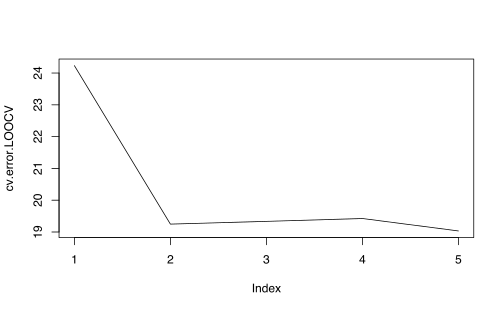
Caso errores auto-correlacionados

##
## Call:
## lm(formula = y ~ x)
##
## Residuals:
## Min 1Q Median 3Q Max
## -29.515 -7.332 -0.650 8.439 32.911
##
## Coefficients:
## Estimate Std. Error t value Pr(>|t|)
## (Intercept) 25.7818 0.4513 57.127 < 2e-16 ***
## x 2.0390 0.4489 4.543 6.23e-06 ***
## ---
## Signif. codes: 0 '***' 0.001 '**' 0.01 '*' 0.05 '.' 0.1 ' ' 1
##
## Residual standard error: 14.27 on 998 degrees of freedom
## Multiple R-squared: 0.02026, Adjusted R-squared: 0.01928
## F-statistic: 20.64 on 1 and 998 DF, p-value: 6.234e-06
5.7.2.3 Normalidad de los errores
Este hipótesis es crucial para hacer las pruebas \(t\) y \(F\) que vimos anteriormente.
Para revisar si se cumple solo basta hacer una qqplot de los residuos.
Caso ideal
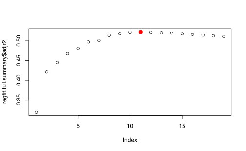
Caso errores auto-correlacionados
Caso no-lineal
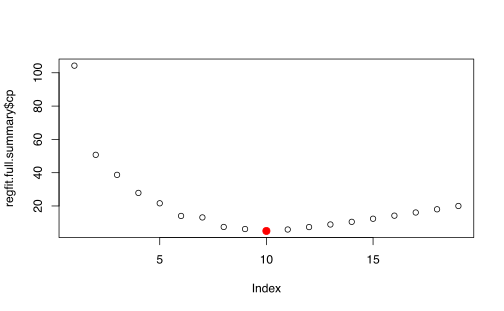
##
## Call:
## lm(formula = y ~ x + I(x^2))
##
## Residuals:
## Min 1Q Median 3Q Max
## -1.86219 -0.31537 -0.01142 0.33770 1.68161
##
## Coefficients:
## Estimate Std. Error t value Pr(>|t|)
## (Intercept) 0.02710 0.01967 1.377 0.169
## x -0.02398 0.01598 -1.500 0.134
## I(x^2) 0.98615 0.01185 83.250 <2e-16 ***
## ---
## Signif. codes: 0 '***' 0.001 '**' 0.01 '*' 0.05 '.' 0.1 ' ' 1
##
## Residual standard error: 0.5013 on 997 degrees of freedom
## Multiple R-squared: 0.8744, Adjusted R-squared: 0.8741
## F-statistic: 3469 on 2 and 997 DF, p-value: < 2.2e-165.7.2.4 Multicolinealidad
Hay dos formas de detectar multicolinealidad
Analizar la matriz de correlaciones de las variables (solamente detecta colinealidad entre pares).
Analizar la correlación multiple entre un predictor y el resto.
Defina \(R^{2}_{X_{j}\vert X_{-j}}\) como el \(R^{2}\) de la regresión multiple entre \(X_{j}\) vs el resto de covariables.
Si \(R^{2}_{X_{j}\vert X_{-j}}\) es cercano a 1 entonces hay alta correlación entre \(X_j\) y el resto.
Defina el factor de inflación de la varianza como:
\[\begin{equation*} \mathrm{VIF}(\hat{\beta}_{j}) = \frac{1}{1-R^{2}_{X_{j}\vert X_{-j}}} \end{equation*}\]
Si \(\mathrm{VIF}\) es alto
- Quitar las variables
- Combinar variables
Hay muchos paquetes que tienen implementado la función vif (car, rms, entre otros).
Caso variables colineales
La variable wt está en unidades de 1000lb. La convertimos a Kilogramos.
mtcars_kg <- mtcars %>% mutate(wt_kg = wt * 1000 *
0.4535 + rnorm(32))
fit_kg <- lm(mpg ~ disp + wt + wt_kg, data = mtcars_kg)
summary(fit_kg)##
## Call:
## lm(formula = mpg ~ disp + wt + wt_kg, data = mtcars_kg)
##
## Residuals:
## Min 1Q Median 3Q Max
## -3.8102 -2.1545 -0.7507 1.5108 5.9400
##
## Coefficients:
## Estimate Std. Error t value Pr(>|t|)
## (Intercept) 3.516e+01 2.192e+00 16.038 1.21e-15 ***
## disp -1.779e-02 9.249e-03 -1.923 0.0647 .
## wt -2.325e+02 2.870e+02 -0.810 0.4248
## wt_kg 5.051e-01 6.328e-01 0.798 0.4314
## ---
## Signif. codes: 0 '***' 0.001 '**' 0.01 '*' 0.05 '.' 0.1 ' ' 1
##
## Residual standard error: 2.935 on 28 degrees of freedom
## Multiple R-squared: 0.7858, Adjusted R-squared: 0.7629
## F-statistic: 34.24 on 3 and 28 DF, p-value: 1.659e-09library(car)
options(scipen = 1000)
VIFs <- vif(fit_kg)
VIFs <- as.data.frame(VIFs) %>% rownames_to_column(var = "vars")
ggplot(VIFs, aes(x = vars, y = VIFs, group = 1)) +
geom_point() + geom_line() + theme_minimal(base_size = 16)
5.7.3 Otros chequeos importantes
5.7.3.1 Puntos extremos
Estos puntos son aquellos que \(Y_i\) esta lejos de \(\hat{Y}_i\). Otra forma de verlo son aquellos puntos que tienen residuos muy altos.
Se puede hacer un gráfico de los residuos vs los valores ajustados como en 5.1 y 5.2.
¿Qué tan grande deben ser los residuos?
Solución: Se debe escalar los residuos adecuadamente.
Se construyen los residuos semi-studendizados
\[\begin{equation*} r_{i}^{s} = \frac{e_{i}}{\sqrt{\mathrm{Var}\left(e_{i}\right)}} \end{equation*}\]
Como \(H=X(X^{\top}X)^{-1}X^{\top}\) es la matriz de proyección entonces sabemos que
\[\begin{align*} \hat{Y}&= H Y \\ e &= Y - \hat{Y} \end{align*}\]
Entonces tenemos que
\[\begin{align*} \mathrm{Var}\left(e\right) &= \mathrm{Var}\left((I-H)Y\right)\\ &= (I-H)^{2}\mathrm{Var}\left(Y\right)\\ &= (I-H) \sigma^{2} \text{ (\(I-H\) es idempotente)} \end{align*}\]
Por lo tanto
\[\begin{equation*} \mathrm{Var}\left(e_{i}\right) = (1-h_{ii}) \sigma^{2} \end{equation*}\]
Para cada observación se calcula los residuos de la forma
\[\begin{equation*} r_{i}^{s} = \frac{e_i}{\sqrt{(1-h_{ii}) \sigma^{2}}} \end{equation*}\]
Caso sin valores extremos
x <- rnorm(1000)
y <- 1 + x + rnorm(1000, sd = 0.5)
fit <- lm(y ~ x)
X <- model.matrix(y ~ x)
H <- X %*% solve(t(X) %*% X) %*% t(X)
I <- diag(1, nrow = 1000)
I_H <- I - H
r_sdnt <- residuals(fit)/sqrt(diag(I_H) * var(y))
plot(fitted(fit), r_sdnt)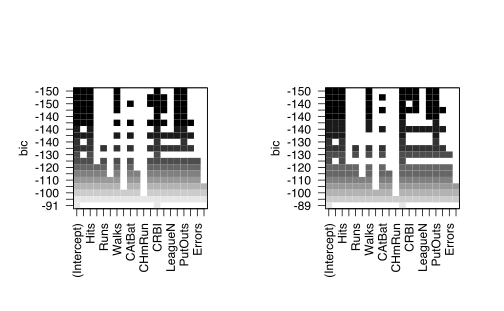
##
## Call:
## lm(formula = y ~ x)
##
## Coefficients:
## (Intercept) x
## 0.9788 0.9684**Caso con valores extremos*
x <- rnorm(1000)
y <- 1 + x + rnorm(1000, sd = 0.5)
y[1:5] <- runif(5, 30, 40)
fit <- lm(y ~ x)
X <- model.matrix(y ~ x)
H <- X %*% solve(t(X) %*% X) %*% t(X)
I <- diag(1, nrow = 1000)
I_H <- I - H
r_sdnt <- residuals(fit)/sqrt(diag(I_H) * var(y))
plot(fitted(fit), r_sdnt)
##
## Call:
## lm(formula = y ~ x)
##
## Coefficients:
## (Intercept) x
## 1.1556 0.94865.7.3.2 Puntos de apalancamiento (leverage)
Un outlier puede ser detectado pero aún así este puede no afectar el modelo como un todo.
El \(r_{i}^s\) puede ser alto por 2 razones:
- los residuos \(e_i\) son altos (un outlier)
- el valor \(h_{ii}\) es cercano a 1. (Se tiene que \(0\leq h_{ii}\leq 1\)).
Los valores donde \(h_{ii}\approx 1\) se les denomina de gran apalancamiento.
La regla empirica dice que
\[\begin{equation*} \sum_{i=1}^{n} h_{ii} = p +1 \text{ (Los predictores más el intercepto) } \end{equation*}\]
Regla empírica: Si \(h_{ii}>\frac{p+1}{n}\) entonces decimos que el punto de gran apalancamiento.
5.7.3.2.1 Distancia de Cook.
La distancia de Cook mide la influencia de las observaciones con respecto al ajuste del modelo lineal con \(p\) variables. Esta se define como:
\[ \displaystyle D_i = \frac{\sum\limits_{j=1}^n (\hat{Y}_j - \hat{Y}_{j(-i)})^2}{(p+1) \sigma^2} \]
donde \(\hat{Y}_{j(-i)}\) significa el ajuste del modelo lineal, removiendo la observación \(i\)-ésima.
Caso base
## (Intercept) x
## 11.3801152 -0.9696033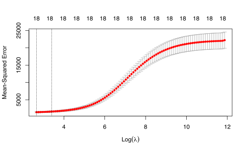
plot(hatvalues(modelo), col = c(rep("black", 10), "red"),
cex = 2, pch = 16)
abline(h = 2/10, col = "blue")
plot(apa_df, col = c(rep("black", 10), "red"), cex = 2,
pch = 16)
abline(a = coef(modelo)[1], b = coef(modelo)[2], col = "blue")Bajo apalancamiento, residuos grandes, influencia pequeña
p_1 <- c(5.4, 11)
apa_df_1 <- rbind(apa_df, p_1)
modelo_1 <- lm(y ~ x, data = apa_df_1)
coef(modelo_1)## (Intercept) x
## 11.8509232 -0.9749534plot(hatvalues(modelo_1), col = c(rep("black", 10),
"red"), cex = 2, pch = 16)
abline(h = 2/11, col = "blue")
plot(apa_df_1, col = c(rep("black", 10), "red"), cex = 2,
pch = 16)
abline(a = coef(modelo)[1], b = coef(modelo)[2], col = "blue")
abline(a = coef(modelo_1)[1], b = coef(modelo_1)[2],
col = "red")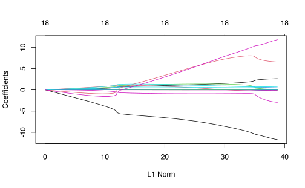
Alto apalancamiento, residuo pequeño, influencia pequeña
p_2 <- c(18, -5.7)
apa_df_2 <- rbind(apa_df, p_2)
modelo_2 <- lm(y ~ x, data = apa_df_2)
coef(modelo_2)## (Intercept) x
## 11.2888153 -0.9507397
plot(hatvalues(modelo_2), col = c(rep("black", 10),
"red"), cex = 2, pch = 16)
abline(h = 2/11, col = "blue")
plot(apa_df_2, col = c(rep("black", 10), "red"), cex = 2,
pch = 16)
abline(a = coef(modelo)[1], b = coef(modelo)[2], col = "blue")
abline(a = coef(modelo_2)[1], b = coef(modelo_2)[2],
col = "red")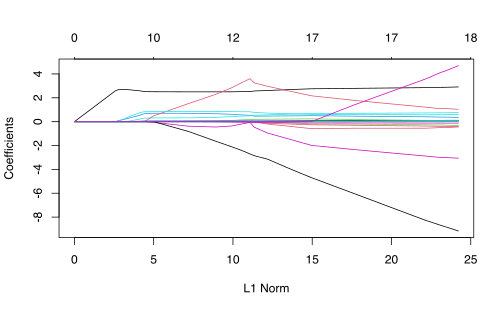
Alto apalancamiento, residuo altos, influencia grande
p_3 <- c(14, 5.1)
apa_df_3 <- rbind(apa_df, p_3)
modelo_3 <- lm(y ~ x, data = apa_df_3)
coef(modelo_3)## (Intercept) x
## 9.6572209 -0.5892241plot(hatvalues(modelo_3), col = c(rep("black", 10),
"red"), cex = 2, pch = 16)
abline(h = 2/11, col = "blue")
plot(apa_df_3, col = c(rep("black", 10), "red"), cex = 2,
pch = 16)
abline(a = coef(modelo)[1], b = coef(modelo)[2], col = "blue")
abline(a = coef(modelo_3)[1], b = coef(modelo_3)[2],
col = "red")


References
James, Gareth, Daniela Witten, Trevor Hastie, and Robert Tibshirani. 2013. An Introduction to Statistical Learning. Vol. 103. New York, NY: Springer New York. https://doi.org/10.1007/978-1-4614-7138-7.